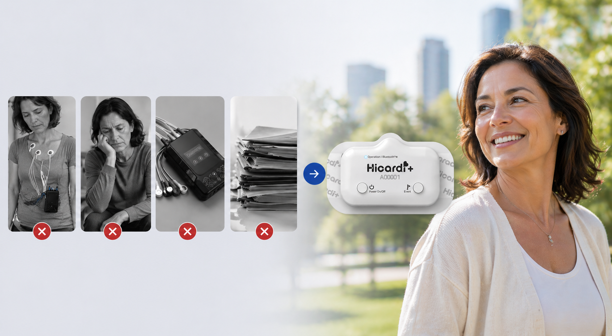

Realize seu exame cardíaco no conforto da sua casa com acompanhamento remoto, tecnologia em nuvem e maior possibilidade de identificar alterações intermitentes.
Solicitar orçamentoSintomas cardíacos podem ocorrer de forma esporádica e muitas vezes não aparecem em exames rápidos ou em um único momento do dia. O Holter 7 dias aumenta significativamente a chance de registrar eventos importantes para o diagnóstico.

Maior possibilidade de registrar alterações cardíacas intermitentes.
Dados enviados continuamente para análise remota e acompanhamento especializado.
Realize o exame em casa e mantenha sua rotina normalmente.
Acompanhamento remoto durante todo o período do exame.
Após o contato pelo WhatsApp, nossa equipe realiza o atendimento inicial e organiza o envio do dispositivo para sua residência. O equipamento utiliza tecnologia Bluetooth e integração em nuvem para transmitir os dados do exame em tempo real.
Um especialista acompanha todo o processo e auxilia na instalação, garantindo qualidade dos dados e suporte durante o monitoramento.

Atendimento domiciliar no Rio Grande do Sul com suporte especializado e monitoramento contínuo.
Falar com especialista